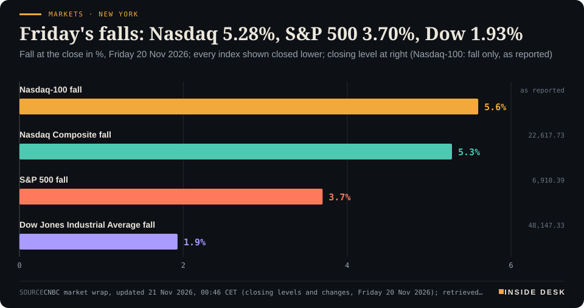
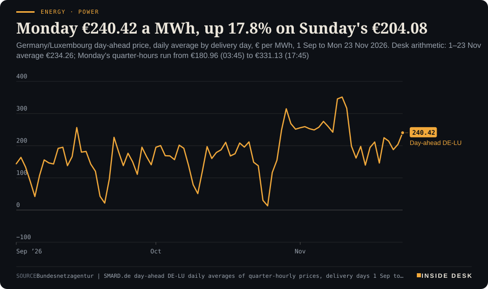

Inside Desk ePaper, Morning ePaper · Mon 23 Nov 2026
Monday, 23 November 2026Always free
Inside Desk
Morning ePaperAvailable 06:30 CET · Berlin
Lead · Markets & Macro
The Dow and the Nasdaq had their worst week since 2020; Asia's regulators spent the weekend writing rules.
The Dow and the Nasdaq had their worst week since 2020; Asia wrote rules over the weekend. Also: €240.42 power, a flu jab's last mile, a burning ship, Antalya's empty text, and a Podium vs Print.
The Dow and the Nasdaq had their worst week since 2020; Asia wrote rules over the weekend. Also: €240.42 power, a flu jab's last mile, a burning ship, Antalya's empty text, and a Podium vs Print.
11 edition pieces · 11 desks · Available 06:30 CET, 23 November 2026
22 ePaper extras, added , 23 November. They appear only in the ePaper and carry their own time.
The website edition follows at 08:30.
The ePaper rhythm
06:30 Morning ePaper (website edition at 08:30)
18:30 Evening ePaper, updated live until 22:30 with an “Updated” time and a Latest page
Sun 10:00 The Sunday Magazine
Berlin time. Every issue is free.
How to read it
Swipe, use the arrow keys or the page strip. Tap any headline for the reading view. Press / to search, t for contents, +/− to zoom. Download the PDF.
LeadInside Desk · Morning ePaper23 November 2026
Markets & Macro · Lead · 3 min
The Dow and the Nasdaq had their worst week since 2020; Asia's regulators spent the weekend writing rules.
You wake up to a market that has already had two arguments without you. The first was in New York on Friday. The second is still going on in Asia as you read this. Neither is finished, and neither is the whole story.
New York first, settled. On Friday the Nasdaq Composite lost 5.28% to 22,617.73 and is now down 2.7% for the year1. The S&P 500 fell 3.7% to 6,910.39 and the Dow 949.73 points, or 1.93%, to 48,147.33; both closed 10% below their records, which is what the word “correction” means and nothing more1. The Nasdaq-100 fell 5.6% and was briefly 20% off its recent high1. Over the week the Dow lost 8%, the S&P 500 8.6% and the Nasdaq about 10%, its largest weekly fall in more than six years1.
Markets · New YorkFriday's falls: Nasdaq 5.28%, S&P 500 3.70%, Dow 1.93%Fall at the close in %, Friday 20 Nov 2026; every index shown closed lower; closing level at right (Nasdaq-100: fall only, as reported)

Bar chart of Friday 20 November 2026 closing falls on four US stock indexes, every one lower on the day: Nasdaq-100 down 5.6 percent, Nasdaq Composite down 5.28 percent to 22,617.73, S&P 500 down 3.70 percent to 6,910.39 and Dow Jones Industrial Average down 1.93 percent to 48,147.33.
Source: CNBC market wrap, updated 21 Nov 2026, 00:46 CET (closing levels and changes, Friday 20 Nov 2026); retrieved 23 Nov 2026 · reported figures · CSV
The causes CNBC lists are worth reading slowly, because none of them is a single day’s news: Nvidia down about 14%, with selling increasing after Reuters reported that the SEC is exploring possible accounting issues at the company, AMD down more than 13%, Micron almost 14%, Anthropic 8.5% lower on its second day, plus the prospect of more Fed rate rises and questions about the pace of the AI build-out1. Walmart, Costco, Johnson & Johnson and Procter & Gamble rose1. When money leaves the story stocks, it goes to the shops that sell toothpaste. That is not panic; it is a preference for revenue you can see.
Then Asia, unsettled. Tokyo is closed for Labour Thanksgiving Day2,6. By 03:30 CET Seoul’s Kospi was down 4.4% at 4,658.16, the Hang Seng 1.3% at 22,111.67 and the Shanghai Composite 1.4% at 3,485.47, AFP reported, with SK hynix and Samsung each about 4% lower2. RTHK noted that Nasdaq-100 futures had bounced nearly 3% in early trade and S&P 500 futures 2%3. A bounce in futures and a fall in cash shares at the same hour is the honest picture: nobody yet knows which one is right.
The weekend’s rulebook. Taiwan’s Financial Supervisory Commission banned short selling of any stock that fell in the previous session from today, the first such blanket restriction since 2015, and raised the short-sale margin from 130% to 150%4. Its NT$500 billion stabilisation fund has been authorised to buy since 6 November4. AFP reports that China made it easier to borrow to buy shares and that South Korea is preparing a stabilisation fund not used since the financial crisis2. Measures like these are dull, legal and temporary. They change who may sell and when, not what the companies earn.
Bonds and gold did the quiet work. The US 10-year yield slipped below 5% and spot gold was up 1.5% at $3,590.01 by 03:52 CET, after a 14-month low on Friday, Investing.com reported; futures markets still price a 92% chance of a quarter-point Fed rise in December7.
Today’s paper. Flash PMIs come from 09:15 CET for France, 09:30 for Germany, 10:00 for the euro area and 10:30 for Britain; the US flash PMIs follow at 15:45, and the Fed’s John Williams speaks at 22:005. Germany’s Ifo index is due tomorrow at 10:00, and the US data for the week are squeezed into Wednesday before Thursday’s holiday5,6.
What you can do with this, if anything, is the boring thing: note the figures, read the invoices when the companies print them, and let the futures argue among themselves. Nothing here is investment advice.
Geo-economicsInside Desk · Morning ePaper23 November 2026
Geo-economics · 2 min
Washington's new remote-access rule took effect on Thursday. Markets read it as a headline; it reads better as a compliance manual.
AFP listed it this morning among the reasons traders are nervous: Washington’s move to close a loophole that let Chinese companies reach powerful American AI chips remotely3. The rule itself is less dramatic and more interesting. It is 30 pages in the Federal Register, it took effect on 19 November, and its comment period runs until 19 January 20271.
What it does is simple to state. Exporters now need a licence when they know that advanced chips will sit in a data centre, anywhere in the world, that gives more than 12,000,000 “aggregate TPP” (the summed processing performance of the chips) to companies headquartered in China, Macau or other countries in Country Group D:51. Linked data centres count together, “including digitally-linked infrastructure”, and data centres, foreign foundries and chip exporters must check who owns and controls their customers1. And chips already shipped are not exempt: if a data centre later starts serving such customers, its operator must seek authorisation for the change of use1.
The Commerce Department’s press release says the rule was written “by and at the direction of” the Treasury and the National Security Council2. That tells you where it sits: not in industrial policy, but in sanctions practice, where the work is know-your-customer files, ownership charts and audit trails1,2.
For you, the practical lesson is about where power lies. A rule like this is enforced by compliance departments, not by speeches. Its success will show up, if at all, in licence applications and refused contracts, which are dull documents. Its costs will show up in the same place.
Geo-economics · Short item · ePaper extra, added
The EU listed Tatyana Kim on 16 November. By Saturday, Russian media reported a new CEO.
Tatyana Kim has stepped down as head of Wildberries, Russia’s largest online retailer, Russian media reported on Saturday, days after the European Union added her to its Russia sanctions list1. TASS and RIA, citing a corporate register, said Alexei Kulikov had been appointed chief executive1.
The EU listed Kim on 16 November, which means an asset freeze in the EU plus travel and transaction bans1. Brussels said Wildberries is “one of the largest taxpayers” in Russia and facilitates the sale of military and dual-use goods; the company and the Kremlin say it does not supply the army1. Wildberries said the sanctions would not affect its operations because it has no assets or business in the EU1.
Sanctions are often judged by whether they stop a war. They are better judged by smaller things: who resigns, who is replaced, which register records it. Those are the parts you can check.
Geo-economics · Brief · ePaper extra, added
OPEC+ ministers will hold a series of meetings on 29 November to decide the group’s output policy for 2027, Reuters reported this morning1. The group, which includes Russia, meets after a week in which Brent fell 4% and COP31’s talks collapsed over whether to mention a phase-out of fossil fuels1.
Reuters notes that Saudi Arabia and other large producers lobbied to keep fossil fuels out of the climate text, according to observers1. One week, two rooms, the same subject: in one they argued about words; in the other they will set barrels.
Markets & MacroInside Desk · Morning ePaper23 November 2026
Markets & Macro · Short item · ePaper extra, added
The FSC used Saturday to change the plumbing of its stock market. The new rules took effect this morning.
Taiwan’s Financial Supervisory Commission announced on Saturday that, from Monday, short selling is banned in any stock whose price fell in the previous session1. It is the first blanket restriction of this kind since 2015, and it replaces a rule from Thursday that applied only to stocks down 3.5% or more1.
Three more changes came with it. The minimum margin for short sales rises from 130% to 150%1. The commission suspended applications from brokers to list new put warrants on the Taiwan Stock Exchange and the Taipei Exchange1. And it asked lenders to suspend securities lending and to recall lent shares early or not renew the loans1.
The context is a big number: the Taiex closed Friday 6.23% lower at 36,033.29, and from its intraday record of 49,968.92 on 6 October it had fallen 28.48% to Friday’s intraday low1. The NT$500 billion (US$15.18 billion) National Financial Stabilization Fund has been authorised to intervene since 6 November1.
Rules about who may sell are a brake, not an engine. They slow the speed of a fall; they cannot set the price of a chip order. Nothing here is investment advice.
Markets & Macro · Brief · ePaper extra, added
US markets close on Thursday for Thanksgiving and shut early on Friday, so the week’s data are pulled forward, Newsquawk’s calendar shows: on Wednesday come jobless claims, the October PCE price index, third-quarter GDP, personal spending and durable goods, followed by the Fed’s Beige Book1. Danske Bank lists the PCE and GDP releases at 14:30 CET, its table shows 3.8% for headline PCE inflation in October, after 3.6%2.
Before that: flash PMIs today, Germany’s Ifo on Tuesday at 10:00 CET, and the Bank of Korea’s decision and the ECB’s minutes on Thursday1,2. A short week is not a quiet one. It is the same paperwork, delivered faster. Nothing here is investment advice.
Politics & InstitutionsInside Desk · Morning ePaper23 November 2026
Politics & Institutions · Podium vs Print · 2 min
Markus Söder wants the cold-progression adjustment back in the 2027 budget and says Bavaria will help pay. The bill, as reported, falls on three levels of government.
Podium
“We now urgently need an adjustment for cold progression. (translated)”
Markus Söder, Bavarian minister-president (CSU), Bild am Sonntag, reported Sunday 22 November 2026
Print€4.2 billion
A full adjustment in 2027 would cost federal government, Länder and municipalities together about €4.2 billion in tax revenue, about €1.8 billion of it for the federal government and about €2.2 billion for the Länder.
Calculations from coalition and finance circles, as reported by Merkur.de with dpa, 22 November 2026
The podium. “We now urgently need an adjustment for cold progression,” Markus Söder told Bild am Sonntag; it had to be “a joint effort of federal government and Länder”, and Bavaria was ready to carry its part1. On ARD’s Sunday programme he called it a matter of fairness, BR reported2.
The print. Cold progression is the quiet tax rise that happens when a pay rise only matches inflation but pushes you into a higher rate. Adjusting the tax schedule for it has been routine since 20161. For 2027 the coalition leaders wrote a cut in electricity tax into the budget plans, but not the adjustment1. A full adjustment would cost about €4.2 billion in 2027, roughly €1.8 billion of it falling on the federal government and €2.2 billion on the Länder, according to calculations from coalition and finance circles reported by Merkur1.
The gap. Söder’s offer is real, but it covers only Bavaria’s share of the Länder’s part. The federal government’s €1.8 billion is still a line someone in Berlin has to find, in a budget the coalition wants to pass this week1.
That is the useful way to read any relief promise: not “is it fair?” but “whose column does it come out of?” A fair idea with no column is a speech. A modest idea with a column is a law.
Politics & Institutions · Short item · ePaper extra, added
The justice minister wants gender-based motives written into Germany's definition of murder, but not a separate crime of femicide.
Justice Minister Stefanie Hubig wants to tighten the law on killings with “gender-specific” motives, DW reported, citing her interview with Bild am Sonntag1. “A man kills, or attempts to kill, his partner or ex-partner almost every day in Germany,” she said1.
Markus Söder wants the coalition’s open pension questions decided quickly, ideally before the end of the year, BR reported from his interview on ARD’s Sunday programme1. On retirement without deductions after 45 contribution years, he suggested a compromise, for example for people in physically demanding jobs1. He also repeated his call for a cold-progression adjustment, which Bavaria says it would help pay for1.
A pension rule for “hard jobs” sounds simple. In practice someone has to define the job list, and that list is where the reform will be won or lost.
Psychology & BehaviourInside Desk · Morning ePaper23 November 2026
Psychology & Behaviour · 2 min
An Indian mental-health provider's 2026 report counts the delay before people ask for help. The number to keep is not the suffering; it is the waiting.
The Amaha Mental Health Report 2026 is based on 13,825 answers given in India before an intervention began, between October 2025 and September 2026, according to a summary published on Sunday1. The headline figure is about time: 53% of respondents had lived with their symptoms for more than a year before they consulted a professional, and only 11.3% reached professional help within the first month1.
The other figures explain why delay matters. 94.9% reported two or more symptoms at once; anxiety was named by 72.1%, stress by 67.5% and low mood by 58.3%1. 27.3% said they could no longer do most or all of their everyday tasks1. And the hopeful line is in the same report: among psychiatry patients, 56.9% showed a measurable improvement by the fourth session1.
Read it carefully. This is a sample of people who eventually came to one provider, not a survey of a country; it says nothing about those who never came. But the shape, a long wait followed by fairly quick improvement once care starts, is the kind of finding that should change where effort goes. Not more campaigns that tell people to feel better, but fewer steps between the first bad month and the first appointment.
If there is something in that for you, it is small: the first conversation, with a family doctor, the article notes, is a reasonable first place to go1. The rest is paperwork, and paperwork can be done.
Psychology & Behaviour · Short item · ePaper extra, added
A global survey finds what its authors call an optimism gap. Personal life scores well; the country's prospects do not.
A survey of about 50,000 people in 92 countries, published in Social Indicators Research by more than 260 researchers, finds that mental health has worsened in recent years, especially among the young, the Max Planck Institute in Freiburg reported1. Young respondents in particular lacked vitality, emotional stability and resilience1.
The patterns are familiar but useful. Employment and higher income go with better mental health; lower formal education with lower well-being; living alone with lower well-being than living with others; and hybrid workers did better than fully remote workers1.
The striking finding is the split. People scored highest on relationships, meaning, competence, engagement and self-esteem, yet rated external factors such as political and economic instability negatively1. Experts call this the “optimism gap”: a decent life of one’s own and a gloomy view of society1.
On a morning when the screens are red, that gap is worth naming. Your own week is mostly made of the things the survey says you rate well.
A meta-analysis of 138 studies with 35,296 students in the US and Canada, published in JAMA Psychiatry, finds that measured tolerance of uncertainty has declined steadily since the 1990s, according to a Sunday summary1. Study author Katherine M. Keyes sees this as a significant risk factor for anxiety disorders1.
Uncertainty cannot be removed from a life. Tolerance of it, unlike the market, can be trained.
Energy & IndustryInside Desk · Morning ePaper23 November 2026
Energy & Industry · 2 min
Germany's day-ahead price for today is the highest daily average since 11 November. Brent, meanwhile, slipped again.
The day-ahead auction for Monday 23 November settled at an average of €240.42 per megawatt hour for Germany and Luxembourg, according to the quarter-hourly prices from the Bundesnetzagentur’s SMARD data, published via Energy-Charts1. That is up from €204.08 for Sunday and €187.88 for Saturday1.
Energy · PowerMonday €240.42 a MWh, up 17.8% on Sunday's €204.08Germany/Luxembourg day-ahead price, daily average by delivery day, € per MWh, 1 Sep to Mon 23 Nov 2026. Desk arithmetic: 1–23 Nov average €234.26; Monday's quarter-hours run from €180.96 (03:45) to €331.13 (17:45)

Line chart of the daily average German-Luxembourg day-ahead electricity price from 1 September to 23 November 2026, in euros per megawatt hour. Prices mostly ran between about €100 and €210 in September and October, climbed above €250 from late October, peaked at €351.48 on Tuesday 10 November, fell to €139.70 on Sunday 15 November, moved between €146.25 and €224.83 in the week of 16 November, were €187.88 on Saturday 21 and €204.08 on Sunday 22 November, and stand at €240.42 for the latest delivery day, Monday 23 November.
Source: Bundesnetzagentur | SMARD.de day-ahead DE-LU daily averages of quarter-hourly prices, delivery days 1 Sep to 19 Nov and 22 Nov 2026 retrieved 22 Nov 2026, 09:17 CET; delivery days 20, 21 and 23 Nov via Fraunhofer ISE Energy-Charts (data: Bundesnetzagentur | SMARD.de), retrieved 23 Nov 2026, 05:36 CET · CC BY 4.0 · CSV
The day has a shape. The cheapest quarter-hour is €180.96 at 03:45; the dearest is €331.13 at 17:45, when lights, kitchens and the last factory shifts overlap1. Desk arithmetic on the same data: the average from 08:00 to 20:00 is €266.04, and the 1–23 November average is €234.261.
Oil went the other way. Brent futures fell 28 cents to $92.29 a barrel by 03:16 CET, after a 4% fall last week, Reuters reported; attacks on Gulf shipping limited the losses2. One analyst told Reuters that empty tankers are building up while laden ones are not, a risk to flows that “will start to price soon”2. That is a forecast from one person, not a fact about prices; it is worth noting because it points at the ships, not the screens.
For you, the useful lesson is the old one: a wholesale price for one day does not arrive on your bill tomorrow. Most households pay a tariff set months ahead. What does reach you, eventually, is the pattern: winter evenings priced at a premium, and a grid that pays for whoever can shift a load away from 17:45.
Energy & Industry · Short item · ePaper extra, added
A claim is not a damage report. The refinery is a large one, and the claims have become routine.
Yemen’s Houthis said on Sunday they had carried out an operation against Saudi Arabia’s Rabigh oil refinery on the Red Sea coast and claimed a direct hit, Reuters reported1. There was no indication of damage, and the Saudi authorities did not immediately comment1.
Energy & Industry · Brief · ePaper extra, added
At 03:30 CET Brent was down 0.4% at $92.23 a barrel and West Texas Intermediate 0.3% at $83.16, while the euro had risen to $1.0986 from $1.0967 on Friday, AFP reported1.
Desk arithmetic: at those rates a barrel of Brent costs about €83.95, against about €84.10 at Friday’s euro rate and the same dollar price. Small moves, but heating oil is bought in euros and priced in dollars, so both lines matter.
Money, FX & CommitteesInside Desk · Morning ePaper23 November 2026
Money, FX & Committees · 2 min
Shares fell on fear of higher rates, and bonds rallied anyway. Both can be true, and you should not have to choose.
Two facts sat side by side this morning. CME FedWatch priced a 92% probability of a quarter-point Federal Reserve rate rise in December, and the minutes of the Fed’s 27–28 October meeting showed nearly all policymakers expected one, Investing.com reported1. Yet the US 10-year Treasury yield slipped below 5%, and the two-year yield had its biggest weekly fall since September 20241.
How can expected rate rises and falling yields coexist? Because a bond yield is not only a forecast of the policy rate. It is also a price that rises when frightened money arrives. On Friday, CNBC noted, investors hid in defensive shares such as Walmart, Costco, Johnson & Johnson and Procter & Gamble2. In bonds the same instinct shows up as buying, which pushes yields down.
Gold tells a similar story with a lag. Spot gold rose 1.5% to $3,590.01 by 03:52 CET, after Friday’s low of $3,502.49, its weakest since September 2025; it had lost about 8% in the week to 20 November1. A haven that fell 8% in a week is a reminder that nothing is safe in the sense of stable. It is only safe in the sense of being someone’s obligation, or someone’s metal, rather than someone’s projection.
For your own savings, the boring conclusion holds: interest-bearing deposits and bonds pay you a known amount for waiting, and that is worth more in a week like this than any view on the Fed. Nothing here is investment advice.
Money, FX & Committees · Short item · ePaper extra, added
The new pension savings account starts on time. Its low-cost public default does not.
The Altersvorsorgedepot, the subsidised private pension account that replaces Riester, starts on 1 January1. The publicly organised basic fund, however, will “probably only” be available after the start, a finance ministry spokesman told RND; government circles expect it next summer at the earliest, tagesschau reported1. Possible operators include the Bundesbank, KfW or the Deutsche Rentenversicherung1.
The subsidy is already fixed. Up to €360 a year saved, the state adds 50 cents per euro; from €360 to €1,800, it adds 25 cents, for a maximum basic allowance of €540 a year1. Families can get a child bonus of €300 per child per year from a monthly contribution of €251.
The consumer federation’s Ramona Pop urged the ministry to deliver the regulation quickly, because the public product shows “what a good product may cost”1.
Desk arithmetic: saving €1,800 a year gets you €180 + €360 = €540 in allowances. A product that waits for the public benchmark loses nothing in allowance if it starts later in the year; what you lose by rushing is the comparison. This is not advice.
Money, FX & Committees · Brief · ePaper extra, added
The ECB’s chief economist Philip Lane is among Monday’s scheduled speakers, alongside the Bank of England’s Huw Pill and the Fed’s John Williams, Newsquawk’s weekly calendar shows1. The ECB’s Boris Vujcic speaks on Tuesday and Friday, and the account of the October policy meeting is due on Thursday1.
Speeches move screens; minutes move understanding. If you read only one thing from Frankfurt this week, read Thursday’s account.
Ordinary & Inherited LifeInside Desk · Morning ePaper23 November 2026
Ordinary & Inherited Life · 2 min
IG Metall's warning strikes in the north continue today. The dispute is small print about timing as much as about money.
IG Metall has called some 23,000 workers at 19 companies in northern Germany to a 24-hour warning strike today, among them staff at Mercedes-Benz, the shipbuilder Meyer Werft and the wind-turbine maker Siemens Gamesa, DW reported1. The union said about 12,300 workers walked out at 17 facilities on Friday1.
The ledger is short. The union wants a 5% wage increase1. Employers have offered a one-off payment next year and a 1.3% wage increase from July 20281.
Read the dates before the percentages. An increase that starts in July 2028 does nothing for a 2027 rent, and a one-off payment does not enter the base on which future rises are calculated. That is why disputes like this often end not with a different percentage but with a different start date, a different term, or a one-off payment that is bigger and earlier.
Desk arithmetic: on a gross €3,500 a month, 5% is €175 a month; 1.3% is €45.50 a month, from July 2028. The gap is real, but so is the gap in time. If you are in a striking workplace today, the useful document is not the slogan but the offer letter, with its dates.
Ordinary & Inherited Life · Short item · ePaper extra, added
An ifo and HWWI study finds renting has not become dearer when measured against net wages. Buying has.
Measured in working time, renting in Germany has not become more expensive since 2004, according to a new calculation by the ifo Institute’s Dresden branch and the Hamburg Institute of International Economics (HWWI), reported by stern1. In 2025, employees had to work an average of 23.8 minutes a month for one square metre of rented space; in 2004 it was 24.4 minutes1.
The averages hide big differences. Between 2004 and 2024 the working time needed for rent fell by more than 5% in 188 of 382 districts, mostly in eastern Germany, and rose by more than 5% in 73, including Berlin and parts of the south and north1. In Leipzig rents rose 77.4%, but the net hourly wage rose 102.9%1.
Buying is another matter. Average purchase prices more than doubled from about €1,435 to €2,989 per square metre; that now takes about 116 working hours per square metre, 11.6% more than in 20041.
“Whoever only looks at rising rents overlooks that incomes have risen markedly too,” said ifo Dresden’s Marcel Thum1. A useful sentence, and a reminder to ask where you live, not what the country does.
Ordinary & Inherited Life · Brief · ePaper extra, added
More than 50 people at a Sunday service in the castle chapel of Bad Grönenbach in the Allgäu showed signs of carbon monoxide poisoning; 16 were treated in hospital and most have since left, BR reported, citing police and the Red Cross1. Police found first indications that the automatic carbon monoxide shut-off of a heater had failed1.
Carbon monoxide is odourless; the first signs are headache, dizziness, nausea and tiredness1. The cause here was a safety device that did not switch off. Devices are maintained by people with a service diary; ask to see yours.
Tech & ComputeInside Desk · Morning ePaper23 November 2026
Tech & Compute · 2 min
The Lean and Mathlib communities say an AI-assisted proof of the Riemann Hypothesis is correct. The story worth telling is how they know.
On 20 November Levent Alpöge released a proof of the Riemann Hypothesis as a Lean library of 17 million lines of code, and on Saturday the Lean and Mathlib communities, endorsed by the Lean FRO and the Mathlib Initiative, said they had “full confidence” that it is correct1. Deutschlandfunk describes Alpöge as an Anthropic researcher who says he solved the problem with artificial intelligence, and quotes the mathematician Christian Blohmann calling it above all PR2. Whatever you think of the claim’s size, look first at the procedure.
The statement lists four criteria1. First, the theorem being proved is Mathlib’s own vetted statement of the hypothesis, not a convenient variant. Second, the library compiles: dozens of people reproduced the same raw proof export. Third, the code proves that exact statement, which the community confirmed with two independent comparison tools after isolating the statement in a file that imports only Mathlib. Fourth, the exported proof passed several proof checkers, including Lean’s own kernel and independent checkers written in different programming languages, run on an inert export “out of reach of hypothetical malicious code”1.
That last phrase is the best sentence in the whole affair. It assumes nothing about the good faith of the author or the machine. It builds a process in which good faith is unnecessary.
What is not settled is understanding. The statement itself looks forward to “all the activity in the mathematical community that will help explain the new ideas”1. A proof nobody can yet read is still a proof; it is not yet knowledge you can teach. That gap, between verified and understood, is where the next few years of human work sit.
For you, the lesson travels well beyond mathematics. When a system produces something you cannot check by reading, do not ask whether to trust it. Ask what the checker is, who runs it, and whether it would catch a lie.
Tech & Compute · Short item · ePaper extra, added
Urgent applications at social courts have surged. The fix on the table is a fee, and the VdK says no.
Urgent applications at Hessen’s social courts rose by 76% in 2026 compared with 2025, while ordinary lawsuits rose by 17%, according to projections after the third quarter from the state’s justice ministry1. Justice Minister Christian Heinz says AI-assisted filings are behind part of the rise: they are often very long, do not always show what the applicant wants, and sometimes cite court decisions that “do not exist”1. Because urgent cases take priority, everyone else waits longer1.
His proposal, taken to the justice ministers’ conference in Hamburg, is a €15 contribution for urgent proceedings, explicitly not a classic court fee1. The social association VdK rejects it: access to the law “must not depend on the wallet”, said president Verena Bentele, adding that one in three lawsuits at social courts is at least partly successful2. The VdK wants more staff, better technology and clearer procedures instead2.
Both sides describe a real cost. One is the judge’s time; the other is the claimant’s €15. The neglected option is the cheapest: a court that tells AI tools, and their users, what a valid urgent application must contain.
Tech & Compute · Brief · ePaper extra, added
The European-Japanese BepiColombo mission entered orbit around Mercury on Saturday after a 37-minute engine burn, the second spacecraft ever to do so, Space.com reported1. On Sunday the team said the burn had been shorter than planned “due to a software issue”; the spacecraft is safe and engineers at ESOC are investigating, with updates promised for Monday1. ESA’s MPO and JAXA’s Mio are due to separate on 9–10 December; science begins in April 20272.
Eight years of travel, and the headline is a careful sentence about a software issue. That is what competent operations sound like.
Health & CareInside Desk · Morning ePaper23 November 2026
Health & Care · 2 min
GPs say the vaccine for over-60s is missing in many practices. The regulator says supply is secured. Both can be right, and the gap between them is an ordering system.
If you have tried to get a flu jab this month and been asked to come back later, you are not imagining it. “Some of the vaccine was delivered far too late, some not in the quantity ordered,” said Nicola Buhlinger-Göpfarth, chair of the German GPs’ association, tagesschau reported; the problems are biggest with vaccines for people over 601. Practices without stock phone round pharmacies, and appointments are postponed1.
The Paul Ehrlich Institute, which tests and releases every batch, confirmed that testing began later than usual this year but sees no nationwide shortage1. Its numbers are large: as of 2 November about 19.9 million doses had passed batch testing and been released for the German market, and it had refused no batch2. The reason for the delay was technical, not bureaucratic. For the 2026/27 season all three virus strains in the vaccines had to be updated, which took manufacturers longer, and some production materials arrived late2.
So where is the gap? The GPs point to the order system. Practices must order about nine months ahead, before demand is known; order too little and you cannot vaccinate everyone, order too much and you are left with the cost1. The pharmacists’ federation says supply is secured in principle, even if a product is sometimes out of stock1. The institute notes it is not part of the whole chain from manufacturer to wholesaler to pharmacy, and that short local shortages remain possible2.
That is a familiar shape: a national figure that is fine, and a last mile that is not. The useful step for you is practical. If your practice is out, ask whether it keeps a waiting list, or whether a nearby pharmacy that vaccinates has stock. A habit, not advice.
Health & Care · Short item · ePaper extra, added
The federal government's answer to a parliamentary question counts supply problems. One line improved; the structural one did not.
In 2026, up to 30 September, 600 medicinal products were affected by supply shortages, the federal government said in its answer of 29 October to a parliamentary question (Bundestag printed paper 21/8860), as summarised by the industry association Pharma Deutschland1. A supply shortage does not necessarily become a care shortage if alternatives or other dosage forms are available, the government noted1.
Children’s medicines improved: first reports of shortages fell from 43 in 2024 to 19 in 2025 and 12 in 2026, though the average duration was 74 days this year after 69 in 20251. The government says it cannot yet reliably say how much of that is due to the 2023 shortage law1.
The structural line did not move much. According to the BfArM, 164 of 585 care-relevant active substances have at most three manufacturers1. …
Health & Care · Brief · ePaper extra, added
Researchers at McMaster University report in the Journal of Infectious Diseases that male mice infected with Zika were markedly more prone to neurological reactions such as weakness and paralysis than females, Deutschlandfunk reported1. The team argues that biological sex should always be considered when treating infectious diseases, and that men may need medication sooner1.
The finding is about mice and Zika. It is a reason for doctors to record sex in trials, not a reason for anyone to stay in bed longer.
Security & OrderInside Desk · Morning ePaper23 November 2026
Security & Order · 2 min
A sanctioned Russian military-logistics ship burned near Finnish waters, and a Russian corvette sank in Benghazi. The sea war has moved far from the Black Sea.
On 21 November the Sparta II, a 121-metre Russian-flagged cargo ship, was reportedly hit by two drones in the eastern Gulf of Finland, west of Gogland Island, Euronews reported1. It caught fire, lost the ability to manoeuvre and drifted into Finnish territorial waters; its 16 crew were evacuated and one was slightly injured1. By Sunday evening Russian vessels were towing it away, and Finland’s president Alexander Stubb said the ship had left Finnish waters1.
The details matter. The ship is operated by Oboronlogistika, a company associated with Russia’s defence ministry, was sailing from St Petersburg to Kaliningrad and is under US sanctions1. Its cargo has not been publicly established; Finnish authorities said military equipment could not be ruled out1. Finnish military officials assessed that Ukraine was likely responsible; Ukraine had not confirmed it1.
Early on Sunday, the Guardian reported, the Russian corvette Merkury was struck by suspected Ukrainian sea drones while docked in Benghazi, Libya; satellite imagery showed it had sunk2. A Russia-linked cargo ship, the Ascalon, was hit off Benghazi later; no one claimed responsibility, and the UN mission in Libya called for an independent investigation2. Estonia’s navy commander said further attacks in the Gulf of Finland could not be ruled out2.
What should you take from this? Not alarm, and not a scoreboard. The Baltic now has emergency crews from Finland, Russia and Estonia working on the same fire2. That kind of cooperation is the dull machinery that keeps a narrow sea usable. It is worth noticing while it still works.
Security & Order · Short item · ePaper extra, added
The North Atlantic Council discusses Thursday's incident on Monday. Poland wants better detection, not speeches.
NATO Secretary General Mark Rutte pledged in Warsaw on Saturday to defend Poland after Russian missiles landed in the country, AFP reported1. Warsaw said two Russian missiles hit its south-east on 19 November and called it an “intentional provocation”; Rutte had earlier condemned “grave violations”1.
NATO’s North Atlantic Council discusses the incident in Brussels today “as part of regular consultations among allies”, an alliance official told AFP; Poland’s deputy defence minister Paweł Zalewski will represent Warsaw1. Prime Minister Donald Tusk said Poland would ask NATO to strengthen detection and surveillance over Polish territory1. The Institute for the Study of War said it believed Russia fired the missiles intentionally, timed with exercises in Poland1.
The words are large; the request is technical. Radars, sensor coverage and response times are what an alliance can actually change by Monday evening.
Security & Order · Brief · ePaper extra, added
The Bundeswehr has for the first time practised the tactical use of so-called kamikaze drones in Lithuania, BR reported: soldiers flew the drones into battle tanks on a training area, without explosive charges because it was a test1. The test is part of the Bundeswehr’s largest exercise in Lithuania so far, in which it also tried AI-based target-recognition software days earlier1.
Equipment that was exotic three years ago is now in the training plan. That is how armies change: not in speeches, but in exercise schedules.
Climate & WeatherInside Desk · Morning ePaper23 November 2026
Climate & Weather · 2 min
COP31 ended on Sunday without an overarching decision, the first collapse of its kind since 2009. The paper still matters; so does what did not need it.
COP31 in Antalya ended on Sunday without a climate pact, after two weeks of talks and two days of overtime, UN News reported; it is the longest UN climate summit on record1. “I understand that there is no agreement on this text. For that reason, these decisions have not been adopted,” said COP31 president Murat Kurum1. Reuters called it the first collapse of the talks since 20093.
The dividing line was fossil fuels. The EU formally objected to the cover decision because it omitted any reference to fossil fuels or a transition away from them, calling that omission “unconscionable”1. Panama and the Marshall Islands also refused1. Speaking for the League of Arab States, Saudi Arabia defended the text’s references to carbon capture and storage1. Ghana, for the African Group, said finance, loss and damage and the just transition had received “a single generic sentence”, but would not block consensus1. BR reported that a decision to give the most affected states more financial support was postponed to 20282.
Not everything stopped. UN climate chief Simon Stiell pointed to an agreement on a just transition and to initiatives under the Action Agenda on electrification, resilience and investment1. António Guterres put it plainly: “There may be no consensus in the negotiating room. There is no ambiguity in the science.”1
The contrarian reading is not that summits are useless. It is that they were never the engine. The engine is a long list of dull documents: grid connection queues, building codes, insurance terms, municipal heat plans. Those did not need Antalya’s signature, and most of them will be written this winter anyway.
Climate & Weather · Short item · ePaper extra, added
The St. Johns drops less than 30 feet over 310 miles. That is why its floods last for weeks.
The St. Johns River near Cocoa, Florida, exceeded its all-time record last week: it reached 18.19 feet on Thursday and 18.68 feet by Friday morning, against the previous record of 17.55 feet set on 11 October 1953, AccuWeather reported1. The gauge has 73 years of records1.
The southern part of the basin had 8 to 18 inches of rain in three days, and the river began flooding near Cocoa on 2 November, reaching major flood stage on 9 November1. AccuWeather expects at least minor flooding there into January 20271. The water management district began controlled releases through the S-96 structure into the C-54 canal, the first such discharges since the tropical storms of 20171.
The reason it lingers is geography. Florida’s longest river flows north for 310 miles but drops less than 30 feet, about an inch a mile, crawling through marshes and lakes1. Fast floods make the news; slow ones fill the insurance files.
Climate & Weather · Brief · ePaper extra, added
Polar sea air reaches Germany on a northerly flow, the German Weather Service said at 05:00 CET: from the southern Black Forest to the Alpine edge, above 500 to 800 metres, 1 to 5 cm more snow by early afternoon, up to 10 cm higher up; light to moderate frost tonight between 0 and −8°C, locally lower, with dense fog in places1.
In Malaysia the number of flood victims in relief centres in Selangor rose to 1,884 from 532 families on Sunday morning, while Perak’s fell to 467, Bernama reported via Malay Mail2. Two weathers, one morning: frost here, water there.
Charts and dataInside Desk · Morning ePaper23 November 2026
Charts and data
Energy · PowerMonday €240.42 a MWh, up 17.8% on Sunday's €204.08Germany/Luxembourg day-ahead price, daily average by delivery day, € per MWh, 1 Sep to Mon 23 Nov 2026. Desk arithmetic: 1–23 Nov average €234.26; Monday's quarter-hours run from €180.96 (03:45) to €331.13 (17:45)
Line chart of the daily average German-Luxembourg day-ahead electricity price from 1 September to 23 November 2026, in euros per megawatt hour. Prices mostly ran between about €100 and €210 in September and October, climbed above €250 from late October, peaked at €351.48 on Tuesday 10 November, fell to €139.70 on Sunday 15 November, moved between €146.25 and €224.83 in the week of 16 November, were €187.88 on Saturday 21 and €204.08 on Sunday 22 November, and stand at €240.42 for the latest delivery day, Monday 23 November.
Source: Bundesnetzagentur | SMARD.de day-ahead DE-LU daily averages of quarter-hourly prices, delivery days 1 Sep to 19 Nov and 22 Nov 2026 retrieved 22 Nov 2026, 09:17 CET; delivery days 20, 21 and 23 Nov via Fraunhofer ISE Energy-Charts (data: Bundesnetzagentur | SMARD.de), retrieved 23 Nov 2026, 05:36 CET · CC BY 4.0 · CSV
Latest values
Series
Value
Date
Chart
Day-ahead DE-LU
240.42
23 Nov 2026
Monday €240.42 a MWh, up 17.8% on Sunday's €204.08
Last data point of each series in the charts above, from the Inside Desk data archive. Sources under each chart.
Back pageInside Desk · Morning ePaper23 November 2026
Before you close the tab
The day in one sentence
New York sold the AI story, Asia's regulators wrote rulebooks, and the numbers that will still matter arrive this week.
One thing you can do this week
This week, when a headline gives you a percentage, look for the date next to it before you react: when does it start, when was it measured, when does it end? A 5% that starts in 2028, a price for Monday only, a fall from a record set last month. Dates turn most alarms into timetables.
A habit, not advice.
What went right
BepiColombo, the joint mission of the European and Japanese space agencies, entered orbit around Mercury on Saturday after a 37-minute engine burn, more than eight years after launch; it is only the second spacecraft ever to circle the innermost planet 1. The burn was shorter than planned because of a software issue, the team said on Sunday, but the spacecraft is safe and engineers are investigating 1. Two agencies, one flyby of Earth, two of Venus and six of Mercury: patience, written down and executed 1.
In euros at home
IG Metall wants a 5% pay rise; employers offer a one-off payment next year and 1.3% from July 2028 2. Desk arithmetic: on a gross salary of €3,500 a month, 5% is €175 a month, or €2,100 a year; 1.3% is €45.50 a month, but only from July 2028. On €2,800 the two figures are €140 and €36.40. Gross, before tax and contributions, and only for workers in the sectors covered.
Desk arithmetic on the cited figures.
Small words
Cold progression (kalte Progression)
When your pay rises only as much as prices, but the higher pay pushes you into a higher tax rate, you pay more tax without being better off. Germany has adjusted its tax schedule for this regularly since 2016; for 2027 the coalition has so far left the adjustment out, and the cost of a full one is put at about €4.2 billion 3.
Commentary for information only. Not investment, legal, tax, medical or political advice. Inside Desk is free and reader-supported. Every number is sourced in the piece it appears in.
This issue has been updated.
All articles in this edition
Markets & Macro · 3 min read
Minus 5.28% on Friday, minus 4.4% in Seoul: rescue kits for Monday
The Dow and the Nasdaq had their worst week since 2020; Asia's regulators spent the weekend writing rules.
You wake up to a market that has already had two arguments without you. The first was in New York on Friday. The second is still going on in Asia as you read this. Neither is finished, and neither is the whole story.
New York first, settled. On Friday the Nasdaq Composite lost 5.28% to 22,617.73 and is now down 2.7% for the year1. The S&P 500 fell 3.7% to 6,910.39 and the Dow 949.73 points, or 1.93%, to 48,147.33; both closed 10% below their records, which is what the word “correction” means and nothing more1. The Nasdaq-100 fell 5.6% and was briefly 20% off its recent high1. Over the week the Dow lost 8%, the S&P 500 8.6% and the Nasdaq about 10%, its largest weekly fall in more than six years1.
Markets · New YorkFriday's falls: Nasdaq 5.28%, S&P 500 3.70%, Dow 1.93%Fall at the close in %, Friday 20 Nov 2026; every index shown closed lower; closing level at right (Nasdaq-100: fall only, as reported)
Bar chart of Friday 20 November 2026 closing falls on four US stock indexes, every one lower on the day: Nasdaq-100 down 5.6 percent, Nasdaq Composite down 5.28 percent to 22,617.73, S&P 500 down 3.70 percent to 6,910.39 and Dow Jones Industrial Average down 1.93 percent to 48,147.33.
Source: CNBC market wrap, updated 21 Nov 2026, 00:46 CET (closing levels and changes, Friday 20 Nov 2026); retrieved 23 Nov 2026 · reported figures · CSV
The causes CNBC lists are worth reading slowly, because none of them is a single day’s news: Nvidia down about 14%, with selling increasing after Reuters reported that the SEC is exploring possible accounting issues at the company, AMD down more than 13%, Micron almost 14%, Anthropic 8.5% lower on its second day, plus the prospect of more Fed rate rises and questions about the pace of the AI build-out1. Walmart, Costco, Johnson & Johnson and Procter & Gamble rose1. When money leaves the story stocks, it goes to the shops that sell toothpaste. That is not panic; it is a preference for revenue you can see.
Then Asia, unsettled. Tokyo is closed for Labour Thanksgiving Day2,6. By 03:30 CET Seoul’s Kospi was down 4.4% at 4,658.16, the Hang Seng 1.3% at 22,111.67 and the Shanghai Composite 1.4% at 3,485.47, AFP reported, with SK hynix and Samsung each about 4% lower2. RTHK noted that Nasdaq-100 futures had bounced nearly 3% in early trade and S&P 500 futures 2%3. A bounce in futures and a fall in cash shares at the same hour is the honest picture: nobody yet knows which one is right.
The weekend’s rulebook. Taiwan’s Financial Supervisory Commission banned short selling of any stock that fell in the previous session from today, the first such blanket restriction since 2015, and raised the short-sale margin from 130% to 150%4. Its NT$500 billion stabilisation fund has been authorised to buy since 6 November4. AFP reports that China made it easier to borrow to buy shares and that South Korea is preparing a stabilisation fund not used since the financial crisis2. Measures like these are dull, legal and temporary. They change who may sell and when, not what the companies earn.
Bonds and gold did the quiet work. The US 10-year yield slipped below 5% and spot gold was up 1.5% at $3,590.01 by 03:52 CET, after a 14-month low on Friday, Investing.com reported; futures markets still price a 92% chance of a quarter-point Fed rise in December7.
Today’s paper. Flash PMIs come from 09:15 CET for France, 09:30 for Germany, 10:00 for the euro area and 10:30 for Britain; the US flash PMIs follow at 15:45, and the Fed’s John Williams speaks at 22:005. Germany’s Ifo index is due tomorrow at 10:00, and the US data for the week are squeezed into Wednesday before Thursday’s holiday5,6.
What you can do with this, if anything, is the boring thing: note the figures, read the invoices when the companies print them, and let the futures argue among themselves. Nothing here is investment advice.
Desk comment A rescue fund is a promise to buy. Earnings are a promise to pay. Only one of them settles invoices.
12 million TPP and a January deadline: the rule that follows a chip into the cloud
Washington's new remote-access rule took effect on Thursday. Markets read it as a headline; it reads better as a compliance manual.
AFP listed it this morning among the reasons traders are nervous: Washington’s move to close a loophole that let Chinese companies reach powerful American AI chips remotely3. The rule itself is less dramatic and more interesting. It is 30 pages in the Federal Register, it took effect on 19 November, and its comment period runs until 19 January 20271.
What it does is simple to state. Exporters now need a licence when they know that advanced chips will sit in a data centre, anywhere in the world, that gives more than 12,000,000 “aggregate TPP” (the summed processing performance of the chips) to companies headquartered in China, Macau or other countries in Country Group D:51. Linked data centres count together, “including digitally-linked infrastructure”, and data centres, foreign foundries and chip exporters must check who owns and controls their customers1. And chips already shipped are not exempt: if a data centre later starts serving such customers, its operator must seek authorisation for the change of use1.
The Commerce Department’s press release says the rule was written “by and at the direction of” the Treasury and the National Security Council2. That tells you where it sits: not in industrial policy, but in sanctions practice, where the work is know-your-customer files, ownership charts and audit trails1,2.
For you, the practical lesson is about where power lies. A rule like this is enforced by compliance departments, not by speeches. Its success will show up, if at all, in licence applications and refused contracts, which are dull documents. Its costs will show up in the same place.
Desk comment Export control used to stop at the port. Now it follows the electricity bill.
Five days from sanctions list to resignation: Wildberries changes its chief executive
The EU listed Tatyana Kim on 16 November. By Saturday, Russian media reported a new CEO.
Tatyana Kim has stepped down as head of Wildberries, Russia’s largest online retailer, Russian media reported on Saturday, days after the European Union added her to its Russia sanctions list1. TASS and RIA, citing a corporate register, said Alexei Kulikov had been appointed chief executive1.
The EU listed Kim on 16 November, which means an asset freeze in the EU plus travel and transaction bans1. Brussels said Wildberries is “one of the largest taxpayers” in Russia and facilitates the sale of military and dual-use goods; the company and the Kremlin say it does not supply the army1. Wildberries said the sanctions would not affect its operations because it has no assets or business in the EU1.
Sanctions are often judged by whether they stop a war. They are better judged by smaller things: who resigns, who is replaced, which register records it. Those are the parts you can check.
Appears only in the ePaper · Commentary for information only. Not advice.
Geo-economics · Brief · ePaper extra, added
29 November: OPEC+ decides 2027 in a series of meetings
The oil group's ministers meet at the end of the week, after Antalya ended without a word on fossil fuels.
OPEC+ ministers will hold a series of meetings on 29 November to decide the group’s output policy for 2027, Reuters reported this morning1. The group, which includes Russia, meets after a week in which Brent fell 4% and COP31’s talks collapsed over whether to mention a phase-out of fossil fuels1.
Reuters notes that Saudi Arabia and other large producers lobbied to keep fossil fuels out of the climate text, according to observers1. One week, two rooms, the same subject: in one they argued about words; in the other they will set barrels.
Appears only in the ePaper · Commentary for information only. Not advice.
Markets & Macro · Short item · ePaper extra, added
From 130% to 150%, and no shorts after a red day: Taiwan's Monday rulebook
The FSC used Saturday to change the plumbing of its stock market. The new rules took effect this morning.
Taiwan’s Financial Supervisory Commission announced on Saturday that, from Monday, short selling is banned in any stock whose price fell in the previous session1. It is the first blanket restriction of this kind since 2015, and it replaces a rule from Thursday that applied only to stocks down 3.5% or more1.
Three more changes came with it. The minimum margin for short sales rises from 130% to 150%1. The commission suspended applications from brokers to list new put warrants on the Taiwan Stock Exchange and the Taipei Exchange1. And it asked lenders to suspend securities lending and to recall lent shares early or not renew the loans1.
The context is a big number: the Taiex closed Friday 6.23% lower at 36,033.29, and from its intraday record of 49,968.92 on 6 October it had fallen 28.48% to Friday’s intraday low1. The NT$500 billion (US$15.18 billion) National Financial Stabilization Fund has been authorised to intervene since 6 November1.
Rules about who may sell are a brake, not an engine. They slow the speed of a fall; they cannot set the price of a chip order. Nothing here is investment advice.
Appears only in the ePaper · Commentary for information only. Not advice.
Markets & Macro · Brief · ePaper extra, added
Three days of data in one: Thanksgiving squeezes America's week into Wednesday
PCE, the second GDP estimate, jobless claims and durable goods all land on 25 November.
US markets close on Thursday for Thanksgiving and shut early on Friday, so the week’s data are pulled forward, Newsquawk’s calendar shows: on Wednesday come jobless claims, the October PCE price index, third-quarter GDP, personal spending and durable goods, followed by the Fed’s Beige Book1. Danske Bank lists the PCE and GDP releases at 14:30 CET, its table shows 3.8% for headline PCE inflation in October, after 3.6%2.
Before that: flash PMIs today, Germany’s Ifo on Tuesday at 10:00 CET, and the Bank of Korea’s decision and the ECB’s minutes on Thursday1,2. A short week is not a quiet one. It is the same paperwork, delivered faster. Nothing here is investment advice.
Appears only in the ePaper · Commentary for information only. Not advice.
Politics & Institutions · 2 min read
Podium vs Print: "we urgently need" relief, and €4.2 billion to forgo
Markus Söder wants the cold-progression adjustment back in the 2027 budget and says Bavaria will help pay. The bill, as reported, falls on three levels of government.
Podium
“We now urgently need an adjustment for cold progression. (translated)”
Markus Söder, Bavarian minister-president (CSU), Bild am Sonntag, reported Sunday 22 November 2026
Print€4.2 billion
A full adjustment in 2027 would cost federal government, Länder and municipalities together about €4.2 billion in tax revenue, about €1.8 billion of it for the federal government and about €2.2 billion for the Länder.
Calculations from coalition and finance circles, as reported by Merkur.de with dpa, 22 November 2026
The podium. “We now urgently need an adjustment for cold progression,” Markus Söder told Bild am Sonntag; it had to be “a joint effort of federal government and Länder”, and Bavaria was ready to carry its part1. On ARD’s Sunday programme he called it a matter of fairness, BR reported2.
The print. Cold progression is the quiet tax rise that happens when a pay rise only matches inflation but pushes you into a higher rate. Adjusting the tax schedule for it has been routine since 20161. For 2027 the coalition leaders wrote a cut in electricity tax into the budget plans, but not the adjustment1. A full adjustment would cost about €4.2 billion in 2027, roughly €1.8 billion of it falling on the federal government and €2.2 billion on the Länder, according to calculations from coalition and finance circles reported by Merkur1.
The gap. Söder’s offer is real, but it covers only Bavaria’s share of the Länder’s part. The federal government’s €1.8 billion is still a line someone in Berlin has to find, in a budget the coalition wants to pass this week1.
That is the useful way to read any relief promise: not “is it fair?” but “whose column does it come out of?” A fair idea with no column is a speech. A modest idea with a column is a law.
Desk comment Relief is easy to announce. It becomes real when someone signs for the shortfall.
Politics & Institutions · Short item · ePaper extra, added
"Almost every day": Hubig wants the murder paragraph to name the motive
The justice minister wants gender-based motives written into Germany's definition of murder, but not a separate crime of femicide.
Justice Minister Stefanie Hubig wants to tighten the law on killings with “gender-specific” motives, DW reported, citing her interview with Bild am Sonntag1. “A man kills, or attempts to kill, his partner or ex-partner almost every day in Germany,” she said1.
Her point is about how courts weigh motives. In some cases, she said, a man’s deep sadness or fear of losing a partner can count as an extenuating circumstance and lead to a manslaughter conviction instead of murder1. She opposes a separate crime of femicide, which some women’s rights groups demand, arguing it would bring “much bigger disadvantages”1. The proposal is still being debated within the coalition; it is to go to the Länder and associations before the end of the year, then to cabinet and parliament1.
45 years, and an exception for hard jobs: Söder hints at the pension compromise
The CSU leader wants open pension questions settled, ideally this year.
Markus Söder wants the coalition’s open pension questions decided quickly, ideally before the end of the year, BR reported from his interview on ARD’s Sunday programme1. On retirement without deductions after 45 contribution years, he suggested a compromise, for example for people in physically demanding jobs1. He also repeated his call for a cold-progression adjustment, which Bavaria says it would help pay for1.
A pension rule for “hard jobs” sounds simple. In practice someone has to define the job list, and that list is where the reform will be won or lost.
Appears only in the ePaper · Commentary for information only. Not advice.
Psychology & Behaviour · 2 min read
The Annex: 53% waited more than a year, 11.3% found help within a month
An Indian mental-health provider's 2026 report counts the delay before people ask for help. The number to keep is not the suffering; it is the waiting.
The Amaha Mental Health Report 2026 is based on 13,825 answers given in India before an intervention began, between October 2025 and September 2026, according to a summary published on Sunday1. The headline figure is about time: 53% of respondents had lived with their symptoms for more than a year before they consulted a professional, and only 11.3% reached professional help within the first month1.
The other figures explain why delay matters. 94.9% reported two or more symptoms at once; anxiety was named by 72.1%, stress by 67.5% and low mood by 58.3%1. 27.3% said they could no longer do most or all of their everyday tasks1. And the hopeful line is in the same report: among psychiatry patients, 56.9% showed a measurable improvement by the fourth session1.
Read it carefully. This is a sample of people who eventually came to one provider, not a survey of a country; it says nothing about those who never came. But the shape, a long wait followed by fairly quick improvement once care starts, is the kind of finding that should change where effort goes. Not more campaigns that tell people to feel better, but fewer steps between the first bad month and the first appointment.
If there is something in that for you, it is small: the first conversation, with a family doctor, the article notes, is a reasonable first place to go1. The rest is paperwork, and paperwork can be done.
Desk comment Help delayed is not help refused. But it is help with interest owed.
Psychology & Behaviour · Short item · ePaper extra, added
92 countries, about 50,000 people: fine at home, worried about the world
A global survey finds what its authors call an optimism gap. Personal life scores well; the country's prospects do not.
A survey of about 50,000 people in 92 countries, published in Social Indicators Research by more than 260 researchers, finds that mental health has worsened in recent years, especially among the young, the Max Planck Institute in Freiburg reported1. Young respondents in particular lacked vitality, emotional stability and resilience1.
The patterns are familiar but useful. Employment and higher income go with better mental health; lower formal education with lower well-being; living alone with lower well-being than living with others; and hybrid workers did better than fully remote workers1.
The striking finding is the split. People scored highest on relationships, meaning, competence, engagement and self-esteem, yet rated external factors such as political and economic instability negatively1. Experts call this the “optimism gap”: a decent life of one’s own and a gloomy view of society1.
On a morning when the screens are red, that gap is worth naming. Your own week is mostly made of the things the survey says you rate well.
Sources
Mehr Stress, weniger Hoffnung — Max-Planck-Institut zur Erforschung von Kriminalität, Sicherheit und Recht, 6 Nov 2026
Appears only in the ePaper · Commentary for information only. Not advice.
138 studies, 35,296 students: tolerance for uncertainty has been falling since the 1990s
A JAMA Psychiatry meta-analysis measures a trait, not a diagnosis.
A meta-analysis of 138 studies with 35,296 students in the US and Canada, published in JAMA Psychiatry, finds that measured tolerance of uncertainty has declined steadily since the 1990s, according to a Sunday summary1. Study author Katherine M. Keyes sees this as a significant risk factor for anxiety disorders1.
Uncertainty cannot be removed from a life. Tolerance of it, unlike the market, can be trained.
Appears only in the ePaper · Commentary for information only. Not advice.
Energy & Industry · 2 min read
€240.42 for Monday, €331.13 at 17:45: the working week buys its power back
Germany's day-ahead price for today is the highest daily average since 11 November. Brent, meanwhile, slipped again.
The day-ahead auction for Monday 23 November settled at an average of €240.42 per megawatt hour for Germany and Luxembourg, according to the quarter-hourly prices from the Bundesnetzagentur’s SMARD data, published via Energy-Charts1. That is up from €204.08 for Sunday and €187.88 for Saturday1.
Energy · PowerMonday €240.42 a MWh, up 17.8% on Sunday's €204.08Germany/Luxembourg day-ahead price, daily average by delivery day, € per MWh, 1 Sep to Mon 23 Nov 2026. Desk arithmetic: 1–23 Nov average €234.26; Monday's quarter-hours run from €180.96 (03:45) to €331.13 (17:45)
Line chart of the daily average German-Luxembourg day-ahead electricity price from 1 September to 23 November 2026, in euros per megawatt hour. Prices mostly ran between about €100 and €210 in September and October, climbed above €250 from late October, peaked at €351.48 on Tuesday 10 November, fell to €139.70 on Sunday 15 November, moved between €146.25 and €224.83 in the week of 16 November, were €187.88 on Saturday 21 and €204.08 on Sunday 22 November, and stand at €240.42 for the latest delivery day, Monday 23 November.
Source: Bundesnetzagentur | SMARD.de day-ahead DE-LU daily averages of quarter-hourly prices, delivery days 1 Sep to 19 Nov and 22 Nov 2026 retrieved 22 Nov 2026, 09:17 CET; delivery days 20, 21 and 23 Nov via Fraunhofer ISE Energy-Charts (data: Bundesnetzagentur | SMARD.de), retrieved 23 Nov 2026, 05:36 CET · CC BY 4.0 · CSV
The day has a shape. The cheapest quarter-hour is €180.96 at 03:45; the dearest is €331.13 at 17:45, when lights, kitchens and the last factory shifts overlap1. Desk arithmetic on the same data: the average from 08:00 to 20:00 is €266.04, and the 1–23 November average is €234.261.
Oil went the other way. Brent futures fell 28 cents to $92.29 a barrel by 03:16 CET, after a 4% fall last week, Reuters reported; attacks on Gulf shipping limited the losses2. One analyst told Reuters that empty tankers are building up while laden ones are not, a risk to flows that “will start to price soon”2. That is a forecast from one person, not a fact about prices; it is worth noting because it points at the ships, not the screens.
For you, the useful lesson is the old one: a wholesale price for one day does not arrive on your bill tomorrow. Most households pay a tariff set months ahead. What does reach you, eventually, is the pattern: winter evenings priced at a premium, and a grid that pays for whoever can shift a load away from 17:45.
Desk comment A weekday price is a timetable, not a verdict.
Energy & Industry · Short item · ePaper extra, added
165 km north of Jeddah: the Houthis claim a hit on Rabigh, and Riyadh says nothing
A claim is not a damage report. The refinery is a large one, and the claims have become routine.
Yemen’s Houthis said on Sunday they had carried out an operation against Saudi Arabia’s Rabigh oil refinery on the Red Sea coast and claimed a direct hit, Reuters reported1. There was no indication of damage, and the Saudi authorities did not immediately comment1.
Rabigh is home to Petro Rabigh, an integrated refining and petrochemical complex developed by Saudi Aramco and Japan’s Sumitomo Chemical, about 165 km north of Jeddah with deep-water export facilities1. The Houthis have repeatedly claimed attacks on Saudi energy infrastructure in recent months, including the East-West pipeline and refineries at Jazan and Ras Tanura; Saudi authorities have not confirmed any attacks on refineries1.
For an energy reader, the discipline is to separate the claim from the cargo. A claimed hit moves headlines; a confirmed outage moves export schedules. Until a loading programme changes, the second has not happened.
Appears only in the ePaper · Commentary for information only. Not advice.
Energy & Industry · Brief · ePaper extra, added
$92.23 for Brent, $1.0986 for the euro: the two numbers under your heating oil
Oil fell a little and the euro rose a little. Both help a tank bought in euros.
At 03:30 CET Brent was down 0.4% at $92.23 a barrel and West Texas Intermediate 0.3% at $83.16, while the euro had risen to $1.0986 from $1.0967 on Friday, AFP reported1.
Desk arithmetic: at those rates a barrel of Brent costs about €83.95, against about €84.10 at Friday’s euro rate and the same dollar price. Small moves, but heating oil is bought in euros and priced in dollars, so both lines matter.
Appears only in the ePaper · Commentary for information only. Not advice.
Money, FX & Committees · 2 min read
92% for a December rise, under 5% for the 10-year: bonds read two stories
Shares fell on fear of higher rates, and bonds rallied anyway. Both can be true, and you should not have to choose.
Two facts sat side by side this morning. CME FedWatch priced a 92% probability of a quarter-point Federal Reserve rate rise in December, and the minutes of the Fed’s 27–28 October meeting showed nearly all policymakers expected one, Investing.com reported1. Yet the US 10-year Treasury yield slipped below 5%, and the two-year yield had its biggest weekly fall since September 20241.
How can expected rate rises and falling yields coexist? Because a bond yield is not only a forecast of the policy rate. It is also a price that rises when frightened money arrives. On Friday, CNBC noted, investors hid in defensive shares such as Walmart, Costco, Johnson & Johnson and Procter & Gamble2. In bonds the same instinct shows up as buying, which pushes yields down.
Gold tells a similar story with a lag. Spot gold rose 1.5% to $3,590.01 by 03:52 CET, after Friday’s low of $3,502.49, its weakest since September 2025; it had lost about 8% in the week to 20 November1. A haven that fell 8% in a week is a reminder that nothing is safe in the sense of stable. It is only safe in the sense of being someone’s obligation, or someone’s metal, rather than someone’s projection.
For your own savings, the boring conclusion holds: interest-bearing deposits and bonds pay you a known amount for waiting, and that is worth more in a week like this than any view on the Fed. Nothing here is investment advice.
Desk comment A haven is not a place that never moves. It is one that still pays you when it does.
Money, FX & Committees · Short item · ePaper extra, added
€540 a year from 1 January, the state's own fund perhaps from summer
The new pension savings account starts on time. Its low-cost public default does not.
The Altersvorsorgedepot, the subsidised private pension account that replaces Riester, starts on 1 January1. The publicly organised basic fund, however, will “probably only” be available after the start, a finance ministry spokesman told RND; government circles expect it next summer at the earliest, tagesschau reported1. Possible operators include the Bundesbank, KfW or the Deutsche Rentenversicherung1.
The subsidy is already fixed. Up to €360 a year saved, the state adds 50 cents per euro; from €360 to €1,800, it adds 25 cents, for a maximum basic allowance of €540 a year1. Families can get a child bonus of €300 per child per year from a monthly contribution of €251.
The consumer federation’s Ramona Pop urged the ministry to deliver the regulation quickly, because the public product shows “what a good product may cost”1.
Desk arithmetic: saving €1,800 a year gets you €180 + €360 = €540 in allowances. A product that waits for the public benchmark loses nothing in allowance if it starts later in the year; what you lose by rushing is the comparison. This is not advice.
Appears only in the ePaper · Commentary for information only. Not advice.
Money, FX & Committees · Brief · ePaper extra, added
Lane today, Vujcic twice, the minutes on Thursday: the ECB's week of voices
No decision this week, only a calendar of explanations.
The ECB’s chief economist Philip Lane is among Monday’s scheduled speakers, alongside the Bank of England’s Huw Pill and the Fed’s John Williams, Newsquawk’s weekly calendar shows1. The ECB’s Boris Vujcic speaks on Tuesday and Friday, and the account of the October policy meeting is due on Thursday1.
Speeches move screens; minutes move understanding. If you read only one thing from Frankfurt this week, read Thursday’s account.
Appears only in the ePaper · Commentary for information only. Not advice.
Ordinary & Inherited Life · 2 min read
Ordinary Ledger: 23,000 asked to strike, 5% demanded, 1.3% offered from July 2028
IG Metall's warning strikes in the north continue today. The dispute is small print about timing as much as about money.
IG Metall has called some 23,000 workers at 19 companies in northern Germany to a 24-hour warning strike today, among them staff at Mercedes-Benz, the shipbuilder Meyer Werft and the wind-turbine maker Siemens Gamesa, DW reported1. The union said about 12,300 workers walked out at 17 facilities on Friday1.
The ledger is short. The union wants a 5% wage increase1. Employers have offered a one-off payment next year and a 1.3% wage increase from July 20281.
Read the dates before the percentages. An increase that starts in July 2028 does nothing for a 2027 rent, and a one-off payment does not enter the base on which future rises are calculated. That is why disputes like this often end not with a different percentage but with a different start date, a different term, or a one-off payment that is bigger and earlier.
Desk arithmetic: on a gross €3,500 a month, 5% is €175 a month; 1.3% is €45.50 a month, from July 2028. The gap is real, but so is the gap in time. If you are in a striking workplace today, the useful document is not the slogan but the offer letter, with its dates.
Desk comment A pay round is two calendars arguing. The percentage is just where they meet.
Ordinary & Inherited Life · Short item · ePaper extra, added
23.8 minutes of work per square metre, 24.4 in 2004: rent measured in your hours
An ifo and HWWI study finds renting has not become dearer when measured against net wages. Buying has.
Measured in working time, renting in Germany has not become more expensive since 2004, according to a new calculation by the ifo Institute’s Dresden branch and the Hamburg Institute of International Economics (HWWI), reported by stern1. In 2025, employees had to work an average of 23.8 minutes a month for one square metre of rented space; in 2004 it was 24.4 minutes1.
The averages hide big differences. Between 2004 and 2024 the working time needed for rent fell by more than 5% in 188 of 382 districts, mostly in eastern Germany, and rose by more than 5% in 73, including Berlin and parts of the south and north1. In Leipzig rents rose 77.4%, but the net hourly wage rose 102.9%1.
Buying is another matter. Average purchase prices more than doubled from about €1,435 to €2,989 per square metre; that now takes about 116 working hours per square metre, 11.6% more than in 20041.
“Whoever only looks at rising rents overlooks that incomes have risen markedly too,” said ifo Dresden’s Marcel Thum1. A useful sentence, and a reminder to ask where you live, not what the country does.
Appears only in the ePaper · Commentary for information only. Not advice.
Ordinary & Inherited Life · Brief · ePaper extra, added
More than 50 poisoned in a chapel: a heater's carbon monoxide cut-off did not work
The cause in Bad Grönenbach is mundane. That is exactly why it matters at home.
More than 50 people at a Sunday service in the castle chapel of Bad Grönenbach in the Allgäu showed signs of carbon monoxide poisoning; 16 were treated in hospital and most have since left, BR reported, citing police and the Red Cross1. Police found first indications that the automatic carbon monoxide shut-off of a heater had failed1.
Carbon monoxide is odourless; the first signs are headache, dizziness, nausea and tiredness1. The cause here was a safety device that did not switch off. Devices are maintained by people with a service diary; ask to see yours.
Appears only in the ePaper · Commentary for information only. Not advice.
Tech & Compute · 2 min read
17 million lines, four checks, one certificate: the Riemann proof and the dull machinery behind it
The Lean and Mathlib communities say an AI-assisted proof of the Riemann Hypothesis is correct. The story worth telling is how they know.
On 20 November Levent Alpöge released a proof of the Riemann Hypothesis as a Lean library of 17 million lines of code, and on Saturday the Lean and Mathlib communities, endorsed by the Lean FRO and the Mathlib Initiative, said they had “full confidence” that it is correct1. Deutschlandfunk describes Alpöge as an Anthropic researcher who says he solved the problem with artificial intelligence, and quotes the mathematician Christian Blohmann calling it above all PR2. Whatever you think of the claim’s size, look first at the procedure.
The statement lists four criteria1. First, the theorem being proved is Mathlib’s own vetted statement of the hypothesis, not a convenient variant. Second, the library compiles: dozens of people reproduced the same raw proof export. Third, the code proves that exact statement, which the community confirmed with two independent comparison tools after isolating the statement in a file that imports only Mathlib. Fourth, the exported proof passed several proof checkers, including Lean’s own kernel and independent checkers written in different programming languages, run on an inert export “out of reach of hypothetical malicious code”1.
That last phrase is the best sentence in the whole affair. It assumes nothing about the good faith of the author or the machine. It builds a process in which good faith is unnecessary.
What is not settled is understanding. The statement itself looks forward to “all the activity in the mathematical community that will help explain the new ideas”1. A proof nobody can yet read is still a proof; it is not yet knowledge you can teach. That gap, between verified and understood, is where the next few years of human work sit.
For you, the lesson travels well beyond mathematics. When a system produces something you cannot check by reading, do not ask whether to trust it. Ask what the checker is, who runs it, and whether it would catch a lie.
Desk comment A genius persuades. A checker certifies. Civilisation runs on the second.
Up 76% in a year: Hessen blames AI-written filings and proposes €15
Urgent applications at social courts have surged. The fix on the table is a fee, and the VdK says no.
Urgent applications at Hessen’s social courts rose by 76% in 2026 compared with 2025, while ordinary lawsuits rose by 17%, according to projections after the third quarter from the state’s justice ministry1. Justice Minister Christian Heinz says AI-assisted filings are behind part of the rise: they are often very long, do not always show what the applicant wants, and sometimes cite court decisions that “do not exist”1. Because urgent cases take priority, everyone else waits longer1.
His proposal, taken to the justice ministers’ conference in Hamburg, is a €15 contribution for urgent proceedings, explicitly not a classic court fee1. The social association VdK rejects it: access to the law “must not depend on the wallet”, said president Verena Bentele, adding that one in three lawsuits at social courts is at least partly successful2. The VdK wants more staff, better technology and clearer procedures instead2.
Both sides describe a real cost. One is the judge’s time; the other is the claimant’s €15. The neglected option is the cheapest: a court that tells AI tools, and their users, what a valid urgent application must contain.
Appears only in the ePaper · Commentary for information only. Not advice.
Tech & Compute · Brief · ePaper extra, added
37 minutes of thrust, a shorter burn than planned, and Mercury in the bag
BepiColombo is in orbit. A software issue cut the burn short; the spacecraft is safe.
The European-Japanese BepiColombo mission entered orbit around Mercury on Saturday after a 37-minute engine burn, the second spacecraft ever to do so, Space.com reported1. On Sunday the team said the burn had been shorter than planned “due to a software issue”; the spacecraft is safe and engineers at ESOC are investigating, with updates promised for Monday1. ESA’s MPO and JAXA’s Mio are due to separate on 9–10 December; science begins in April 20272.
Eight years of travel, and the headline is a careful sentence about a software issue. That is what competent operations sound like.
Appears only in the ePaper · Commentary for information only. Not advice.
Health & Care · 2 min read
19.9 million doses released, and some fridges still empty: the flu jab's last mile
GPs say the vaccine for over-60s is missing in many practices. The regulator says supply is secured. Both can be right, and the gap between them is an ordering system.
If you have tried to get a flu jab this month and been asked to come back later, you are not imagining it. “Some of the vaccine was delivered far too late, some not in the quantity ordered,” said Nicola Buhlinger-Göpfarth, chair of the German GPs’ association, tagesschau reported; the problems are biggest with vaccines for people over 601. Practices without stock phone round pharmacies, and appointments are postponed1.
The Paul Ehrlich Institute, which tests and releases every batch, confirmed that testing began later than usual this year but sees no nationwide shortage1. Its numbers are large: as of 2 November about 19.9 million doses had passed batch testing and been released for the German market, and it had refused no batch2. The reason for the delay was technical, not bureaucratic. For the 2026/27 season all three virus strains in the vaccines had to be updated, which took manufacturers longer, and some production materials arrived late2.
So where is the gap? The GPs point to the order system. Practices must order about nine months ahead, before demand is known; order too little and you cannot vaccinate everyone, order too much and you are left with the cost1. The pharmacists’ federation says supply is secured in principle, even if a product is sometimes out of stock1. The institute notes it is not part of the whole chain from manufacturer to wholesaler to pharmacy, and that short local shortages remain possible2.
That is a familiar shape: a national figure that is fine, and a last mile that is not. The useful step for you is practical. If your practice is out, ask whether it keeps a waiting list, or whether a nearby pharmacy that vaccinates has stock. A habit, not advice.
Desk comment A national supply is a statistic. A patient is served from one fridge.
600 products short, 12 children's medicines first reported: the shortage ledger to September
The federal government's answer to a parliamentary question counts supply problems. One line improved; the structural one did not.
In 2026, up to 30 September, 600 medicinal products were affected by supply shortages, the federal government said in its answer of 29 October to a parliamentary question (Bundestag printed paper 21/8860), as summarised by the industry association Pharma Deutschland1. A supply shortage does not necessarily become a care shortage if alternatives or other dosage forms are available, the government noted1.
Children’s medicines improved: first reports of shortages fell from 43 in 2024 to 19 in 2025 and 12 in 2026, though the average duration was 74 days this year after 69 in 20251. The government says it cannot yet reliably say how much of that is due to the 2023 shortage law1.
The structural line did not move much. According to the BfArM, 164 of 585 care-relevant active substances have at most three manufacturers1. The government is cautious about blanket stockpiling duties and export bans, pointing to storage, capital and expiry costs, and puts its hopes in the EU’s Critical Medicines Act1.
Shortages are solved by boring things: more suppliers per substance, contracts split between them, and prices that make the second supplier worth keeping.
Appears only in the ePaper · Commentary for information only. Not advice.
Health & Care · Brief · ePaper extra, added
Male mice, harder hit: what a Zika study can and cannot say about 'man flu'
A McMaster study finds sex differences in immune responses. The animals were mice.
Researchers at McMaster University report in the Journal of Infectious Diseases that male mice infected with Zika were markedly more prone to neurological reactions such as weakness and paralysis than females, Deutschlandfunk reported1. The team argues that biological sex should always be considered when treating infectious diseases, and that men may need medication sooner1.
The finding is about mice and Zika. It is a reason for doctors to record sex in trials, not a reason for anyone to stay in bed longer.
Appears only in the ePaper · Commentary for information only. Not advice.
Security & Order · 2 min read
121 metres, 16 crew, two drones: the Gulf of Finland meets the war it borders
A sanctioned Russian military-logistics ship burned near Finnish waters, and a Russian corvette sank in Benghazi. The sea war has moved far from the Black Sea.
On 21 November the Sparta II, a 121-metre Russian-flagged cargo ship, was reportedly hit by two drones in the eastern Gulf of Finland, west of Gogland Island, Euronews reported1. It caught fire, lost the ability to manoeuvre and drifted into Finnish territorial waters; its 16 crew were evacuated and one was slightly injured1. By Sunday evening Russian vessels were towing it away, and Finland’s president Alexander Stubb said the ship had left Finnish waters1.
The details matter. The ship is operated by Oboronlogistika, a company associated with Russia’s defence ministry, was sailing from St Petersburg to Kaliningrad and is under US sanctions1. Its cargo has not been publicly established; Finnish authorities said military equipment could not be ruled out1. Finnish military officials assessed that Ukraine was likely responsible; Ukraine had not confirmed it1.
Early on Sunday, the Guardian reported, the Russian corvette Merkury was struck by suspected Ukrainian sea drones while docked in Benghazi, Libya; satellite imagery showed it had sunk2. A Russia-linked cargo ship, the Ascalon, was hit off Benghazi later; no one claimed responsibility, and the UN mission in Libya called for an independent investigation2. Estonia’s navy commander said further attacks in the Gulf of Finland could not be ruled out2.
What should you take from this? Not alarm, and not a scoreboard. The Baltic now has emergency crews from Finland, Russia and Estonia working on the same fire2. That kind of cooperation is the dull machinery that keeps a narrow sea usable. It is worth noticing while it still works.
Desk comment Shipping lanes are agreements. Every strike near them is a renegotiation nobody signed.
Security & Order · Short item · ePaper extra, added
"Every inch", and a meeting in Brussels today: NATO answers two missiles in Poland
The North Atlantic Council discusses Thursday's incident on Monday. Poland wants better detection, not speeches.
NATO Secretary General Mark Rutte pledged in Warsaw on Saturday to defend Poland after Russian missiles landed in the country, AFP reported1. Warsaw said two Russian missiles hit its south-east on 19 November and called it an “intentional provocation”; Rutte had earlier condemned “grave violations”1.
NATO’s North Atlantic Council discusses the incident in Brussels today “as part of regular consultations among allies”, an alliance official told AFP; Poland’s deputy defence minister Paweł Zalewski will represent Warsaw1. Prime Minister Donald Tusk said Poland would ask NATO to strengthen detection and surveillance over Polish territory1. The Institute for the Study of War said it believed Russia fired the missiles intentionally, timed with exercises in Poland1.
The words are large; the request is technical. Radars, sensor coverage and response times are what an alliance can actually change by Monday evening.
Appears only in the ePaper · Commentary for information only. Not advice.
Security & Order · Brief · ePaper extra, added
Drones on tanks, no warheads: the Bundeswehr's first kamikaze-drone test in Lithuania
A test, during the largest German exercise there so far.
The Bundeswehr has for the first time practised the tactical use of so-called kamikaze drones in Lithuania, BR reported: soldiers flew the drones into battle tanks on a training area, without explosive charges because it was a test1. The test is part of the Bundeswehr’s largest exercise in Lithuania so far, in which it also tried AI-based target-recognition software days earlier1.
Equipment that was exotic three years ago is now in the training plan. That is how armies change: not in speeches, but in exercise schedules.
Appears only in the ePaper · Commentary for information only. Not advice.
Climate & Weather · 2 min read
Two weeks, two days of overtime, no text: what Antalya leaves for Addis Ababa
COP31 ended on Sunday without an overarching decision, the first collapse of its kind since 2009. The paper still matters; so does what did not need it.
COP31 in Antalya ended on Sunday without a climate pact, after two weeks of talks and two days of overtime, UN News reported; it is the longest UN climate summit on record1. “I understand that there is no agreement on this text. For that reason, these decisions have not been adopted,” said COP31 president Murat Kurum1. Reuters called it the first collapse of the talks since 20093.
The dividing line was fossil fuels. The EU formally objected to the cover decision because it omitted any reference to fossil fuels or a transition away from them, calling that omission “unconscionable”1. Panama and the Marshall Islands also refused1. Speaking for the League of Arab States, Saudi Arabia defended the text’s references to carbon capture and storage1. Ghana, for the African Group, said finance, loss and damage and the just transition had received “a single generic sentence”, but would not block consensus1. BR reported that a decision to give the most affected states more financial support was postponed to 20282.
Not everything stopped. UN climate chief Simon Stiell pointed to an agreement on a just transition and to initiatives under the Action Agenda on electrification, resilience and investment1. António Guterres put it plainly: “There may be no consensus in the negotiating room. There is no ambiguity in the science.”1
The contrarian reading is not that summits are useless. It is that they were never the engine. The engine is a long list of dull documents: grid connection queues, building codes, insurance terms, municipal heat plans. Those did not need Antalya’s signature, and most of them will be written this winter anyway.
Desk comment A summit without a text is a failure of drafting. A grid without a plan is a failure of everything else.
Climate & Weather · Short item · ePaper extra, added
18.68 feet against 17.55 in 1953: Florida's slowest river breaks its record
The St. Johns drops less than 30 feet over 310 miles. That is why its floods last for weeks.
The St. Johns River near Cocoa, Florida, exceeded its all-time record last week: it reached 18.19 feet on Thursday and 18.68 feet by Friday morning, against the previous record of 17.55 feet set on 11 October 1953, AccuWeather reported1. The gauge has 73 years of records1.
The southern part of the basin had 8 to 18 inches of rain in three days, and the river began flooding near Cocoa on 2 November, reaching major flood stage on 9 November1. AccuWeather expects at least minor flooding there into January 20271. The water management district began controlled releases through the S-96 structure into the C-54 canal, the first such discharges since the tropical storms of 20171.
The reason it lingers is geography. Florida’s longest river flows north for 310 miles but drops less than 30 feet, about an inch a mile, crawling through marshes and lakes1. Fast floods make the news; slow ones fill the insurance files.
Appears only in the ePaper · Commentary for information only. Not advice.
Climate & Weather · Brief · ePaper extra, added
Up to 10 cm more on the Alpine edge, −8°C tonight: polar air, and floods elsewhere
Germany gets light snow and frost. Malaysia's Selangor shelters 1,884 people.
Polar sea air reaches Germany on a northerly flow, the German Weather Service said at 05:00 CET: from the southern Black Forest to the Alpine edge, above 500 to 800 metres, 1 to 5 cm more snow by early afternoon, up to 10 cm higher up; light to moderate frost tonight between 0 and −8°C, locally lower, with dense fog in places1.
In Malaysia the number of flood victims in relief centres in Selangor rose to 1,884 from 532 families on Sunday morning, while Perak’s fell to 467, Bernama reported via Malay Mail2. Two weathers, one morning: frost here, water there.